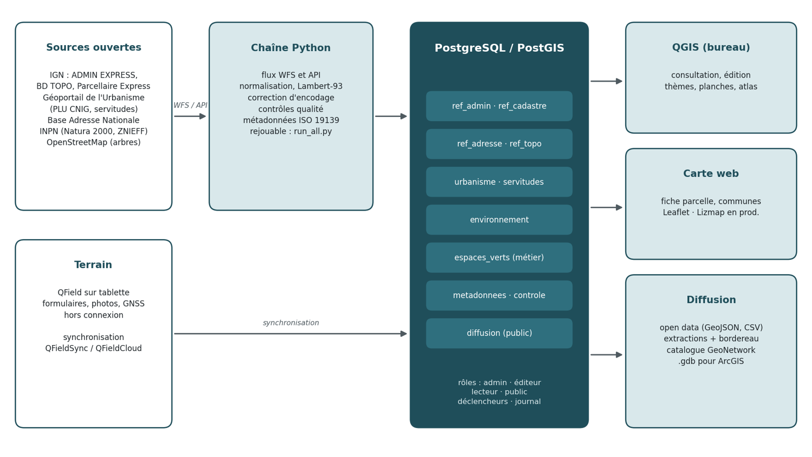
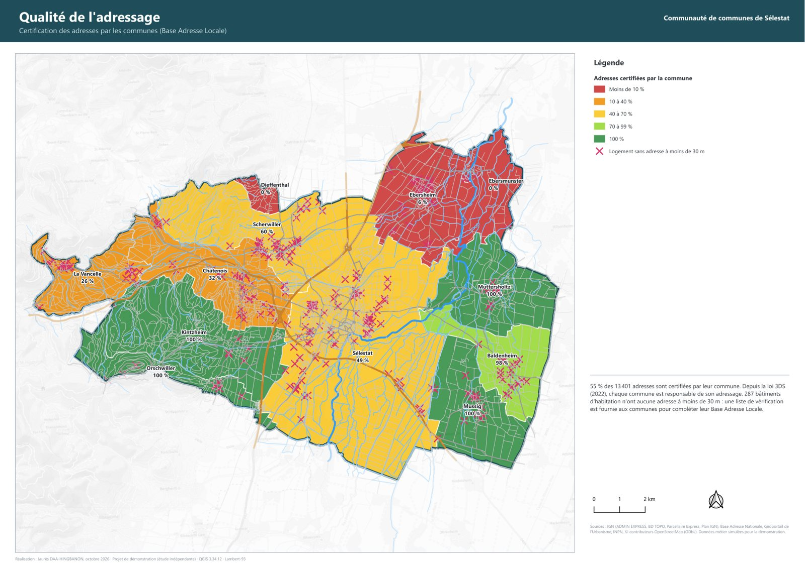
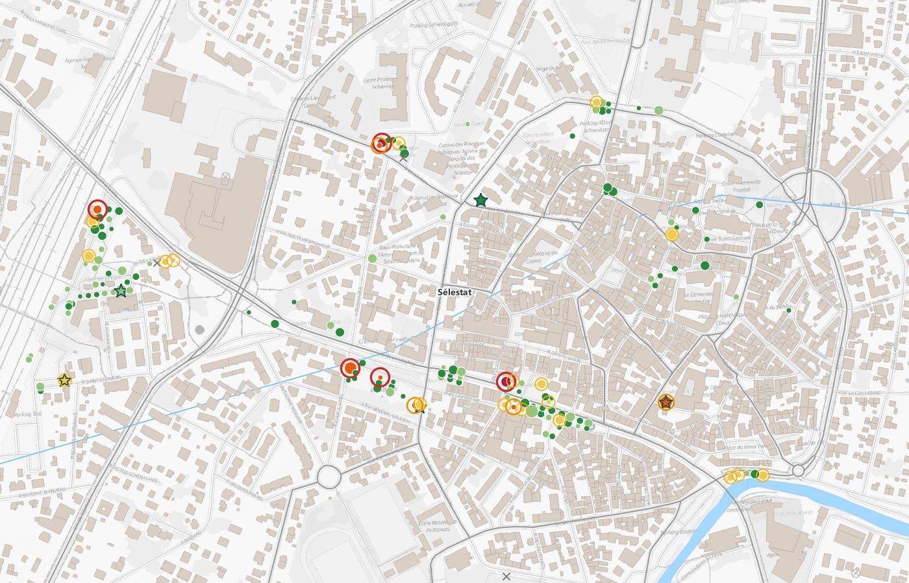
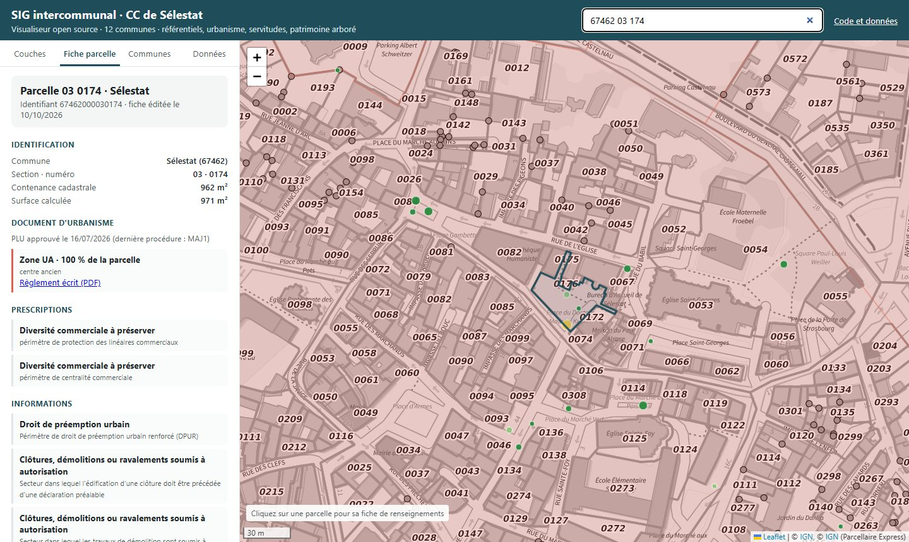
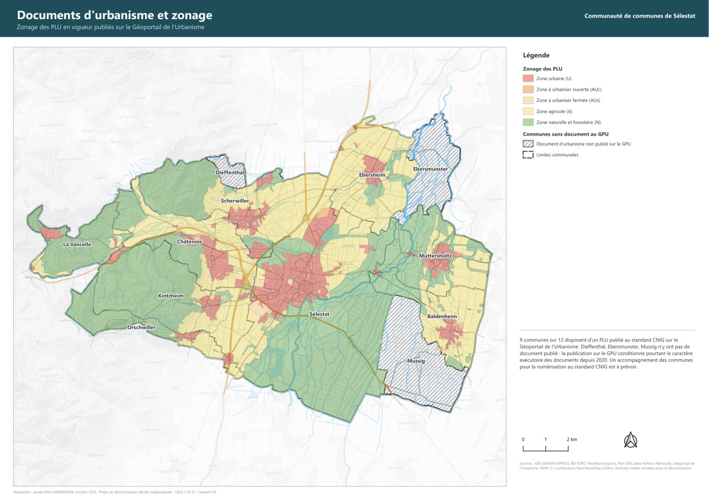

Administration SIG · PostgreSQL/PostGIS · QGIS · QField · Webmapping · Projet personnel, 2026
Socle SIG intercommunal open source
Mettre en place, de bout en bout et en logiciels libres, le SIG commun d'une ville-centre et de ses 12 communes
Contexte et objectif
Une ville-centre et sa communauté de communes qui partagent un service des systèmes d'information ont besoin d'un SIG commun. Il faut acquérir les données, les administrer, les traiter, les analyser et les diffuser, puis paramétrer les outils de consultation et accompagner les agents. Ce projet construit ce socle pour les 12 communes de la communauté de communes de Sélestat (37 500 habitants), uniquement à partir de données ouvertes.
Je l'ai réalisé entièrement avec des logiciels libres : QGIS, PostgreSQL/PostGIS, QField, Python et Leaflet. C'était l'occasion de montrer que les usages de l'environnement ESRI se transposent directement : base d'entreprise, règles attributaires, collecte mobile, applications web, séries de cartes. Le socle reste interopérable avec ArcGIS, qui lit PostGIS et les GeoPackage, et une géodatabase fichier est livrée pour les partenaires. C'est une démonstration indépendante qui n'engage ni la Ville ni la communauté de communes.

Une base PostgreSQL/PostGIS administrée
La base compte 12 schémas, un par famille de données : référentiels (limites, cadastre, adresses, BD TOPO), urbanisme au standard CNIG, servitudes, environnement, données métier, métadonnées, contrôle et diffusion. Quatre rôles (administrateur, éditeur, lecteur, public) reçoivent des droits par bloc, y compris sur les tables créées plus tard. Aucun mot de passe n'apparaît dans les scripts ni dans les projets : QGIS se connecte par un fichier de service.
Les référentiels arrivent par une chaîne Python qui interroge les flux officiels : WFS de la Géoplateforme IGN, API du Géoportail de l'Urbanisme, INPN et Base Adresse Nationale. Au total, 51 132 parcelles, 13 401 adresses, 471 zones de PLU et 97 servitudes. Une fonction SQL produit en une requête la fiche de renseignements d'une parcelle : zonage avec la part couverte et le lien vers le règlement, prescriptions, droit de préemption, servitudes et zonages naturels. C'est l'équivalent d'une fiche Cart@DS ou Arcopole.
Contrôle qualité : ce que les données révèlent
Huit vues de contrôle renvoient chacune une ligne par anomalie, avec sa géométrie, pour corriger directement dans QGIS. Elles font ressortir plusieurs points :
- trois communes n'ont aucun document d'urbanisme publié sur le Géoportail de l'Urbanisme ;
- deux zones de PLU se chevauchent, dont 1,6 ha à Ebersheim ;
- seules 55 % des adresses sont certifiées par leur commune, de 0 % à 100 % selon les communes ;
- 287 bâtiments d'habitation n'ont aucune adresse à moins de 30 m.
Deux défauts des sources ont été corrigés à l'intégration : des libellés de servitudes encodés deux fois en UTF-8, et l'absence de lien vers les règlements écrits des PLU.

Données métier : le patrimoine arboré, du bureau au terrain
Le modèle métier d'inventaire du patrimoine arboré compte 624 arbres et 824 interventions. Il est conçu pour la saisie hors connexion : identifiants UUID, listes de valeurs en tables, déclencheurs qui attribuent un numéro lisible, déduisent la commune de la position, refusent un point hors du territoire et journalisent chaque modification avec l'état avant et après. Une intervention met à jour la fiche de l'arbre : un diagnostic actualise son état, un abattage le retire de l'inventaire en place.
Le projet QField reprend les formulaires du bureau (onglets, listes déroulantes, contrôles de saisie, photo), calcule la commune hors connexion par expression et enregistre la précision GNSS. Les positions viennent d'OpenStreetMap et les attributs sont simulés pour la démonstration.

Consultation : projets QGIS et carte web
Le projet QGIS existe en deux versions identiques : l'une connectée à PostGIS pour le travail quotidien, l'autre sur GeoPackage pour un poste sans accès au serveur. Il propose 12 thèmes de carte, des formulaires de saisie et les métadonnées de chaque couche.
La carte web reprend les usages d'une application Experience Builder ou Lizmap :
- recherche d'adresse ou de référence cadastrale ;
- fiche de renseignements imprimable, qui interroge le cadastre de l'IGN en direct et le croise avec les données de la base ;
- indicateurs comparés entre communes ;
- catalogue des données.

Cartographie, métadonnées et diffusion
Six planches A3 et un atlas communal (une fiche d'identité SIG par commune) sont des mises en page du projet QGIS : ils se régénèrent à chaque mise à jour. La sémiologie suit les conventions de l'urbanisme : couleurs CNIG pour le zonage, hachures pour les servitudes, fond IGN en gris, voile hors du territoire.
Chaque jeu de données a une fiche de métadonnées ISO 19139 (profil INSPIRE), avec un niveau de diffusion : ouverte, interne ou restreinte. Une charte de diffusion en fixe les règles. Un outil d'extraction les applique : il livre les jeux ouverts, remplace un jeu interne par sa version publique, refuse le reste avec le motif, joint les métadonnées et un bordereau de diffusion, puis inscrit la remise au registre.

Livrables et reproductibilité
Le projet est livré comme un dossier complet :
- une note d'architecture, une charte de diffusion et trois fiches tutoriel (QGIS, QField, carte web) ;
- la sauvegarde de la base PostGIS et ses scripts SQL commentés ;
- les projets QGIS et QField ;
- une géodatabase fichier pour ArcGIS ;
- les métadonnées ISO et le dictionnaire des données ;
- les planches, l'atlas et un classeur de contrôle qualité.
Un script unique reconstruit l'ensemble en une dizaine de minutes. Il suffit de le relancer pour mettre à jour les référentiels, et de modifier trois paramètres pour transposer le socle à une autre intercommunalité.
Consulter le projet
Le dépôt complet (scripts Python et SQL, projets QGIS, livrables) est en accès libre.
Voir le code sur GitHub